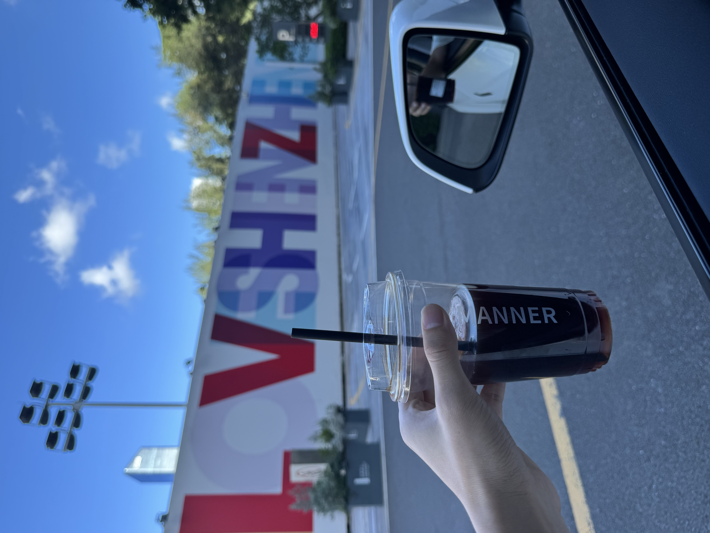

今天是七夕，是跟女朋友约会的日子，也是我职业生涯的 last day。
这两件事，说来你可能觉得八竿子打不着，但机缘巧合，我们共同合作的一款独立开发的 App 「FocusFlight」，却成为了连接一切的起点。

很多人可能觉得，独立开发是这两年才火起来的事。AI 兴起之后，谁都可以做点小产品。但我的故事要追溯到八年前。
大一的图书馆，我偶然翻到周楷雯的《Producter：让产品从0到1》。那一刻，我突然觉得：
如果能做出一个 App，全世界的人都能在手机上下载，该有多酷！
于是我组了一台黑苹果，从0到1开始边学边做自己的产品，尤其是当我听说 Apple 每年会评选一些设计优秀的 App 颁奖，叫做 Apple Design Awards 的时候，觉得得奖的那些 App 更酷了，简直就是 App 界的奥斯卡，那时的我眼里，别的什么都不重要。
直到大学毕业，才有一款小有名气的 App 出现了，叫「文字卡片」，也是我做的第一款可以拿到 Apple 每周编辑推荐的 App。
毕业后，我开始了我的打工生涯。
四年打工，我待过大厂（严格且无趣，每天加班到很晚），也待过小团队（自由且灵活，有更多趣味性工作）。区别是挺大，但相同点是：你始终是在完成别人的目标。
直到 「FocusFlight」 出现，它成了我所有经历的汇聚点。说它是 App，其实也是个借口。
借口是什么？
是我们在咖啡店、公园、海边、甚至酒吧，找了无数理由逃离格子间。
是我们证明“灵感不一定诞生在会议室里”，它也可以生长在海风和背景音乐里。
至少比被困在深南大道早高峰里，要浪漫多了。
这四年里，也不是没有迷茫的时候。
一方面觉得上班挺没劲的，另一方面又承认它确实很稳定。
直到有一天，我发现那些“不确定”慢慢变成了“可行”。
独立 App 虽然不是什么一夜暴富的故事，但它们足够让我不用再纠结“能不能活下去”，而是开始思考“要怎样活得更自由”。
于是我明白，自己已经走到下一个阶段。
那接下来，终于可以心安理得地去折腾梦想了。
未来见，在路上见。愿每一天都不只是工作日，而是心动日✨。